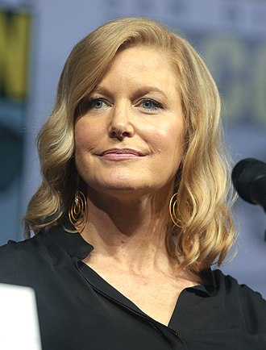
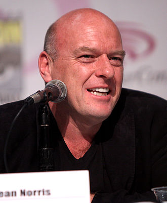

Cast and characters
Bryan Cranston
as Walter White – a chemistry teacher diagnosed with Stage IIIA lung cancer who turns to making meth to secure his family's finances.
As his shady business progresses, Walter gains a notorious reputation under the name of "Heisenberg". Cranston stated that, though he enjoyed doing comedy, he decided he ... should really focus on doing something else. But I think any good drama worth its weight always has a sprinkling of comedy in it, because you can ease the tension to an audience when it's necessary, and then build it back up again. Walt White has no clue he's occasionally funny, but as an actor, I recognize when there are comedic moments and opportunities.
Anna Gunn
as Skyler White – Walter's wife who was pregnant with their second child before his diagnosis and who becomes increasingly suspicious of her husband after he
begins behaving in unfamiliar ways. Gunn sees Skyler as "grounded, tough, smart and driven". Gunn sees Skyler's stalled writing career as her biggest dream, saying, "I think she really deep down yearns to be an artist and to be creative and productive.
Aaron Paul
as Jesse Pinkman – Walter's cooking partner and former student. Paul sees Jesse as a funny kid. "He's just this lost soul
I don't think he's a bad kid, he just got mixed in the wrong crowd." Paul elaborated on the character's background, saying, "He doesn't come from an abusive, alcoholic background. But maybe he just didn't relate to his father, maybe his father was too strict and too proper for Jesse." Paul compared the character's relationship with Walt to The Odd Couple.
Dean Norris
as Hank Schrader – Marie's husband, Walter and Skyler's brother-in-law and a DEA agent. At the beginning of the series, Hank was intended to be the "comic relief".
Norris, who has played several policemen before in film and television,stated: Having played so many cops, I've talked with a lot of technical advisers, so I've been able to pick up a lot. Coincidentally, one of my best friends growing up is a cop in Chicago, and one of my other best friends out in LA is a sheriff. So I get to see all the components of that culture.